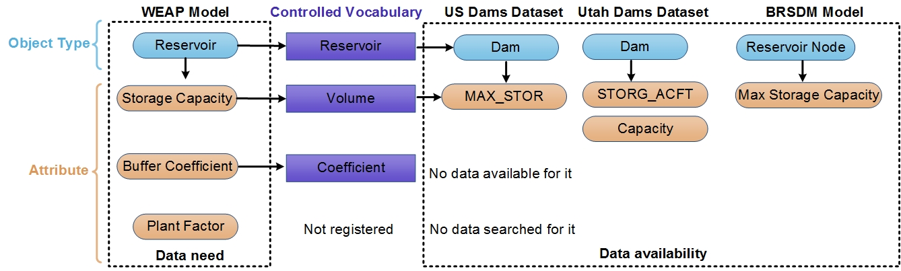
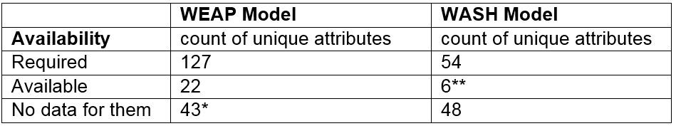

Use case 1¶
Identify data availability for attributes needed by a model in a study area
Example
What attributes that have available data to develop a WEAP and WASH models in the Upper Bear River watershed?
Problem¶
In existing practices, identifying what input data is available and where it can be found for each model if often laborious and time-consuming effort.
Solution¶
This use case more readily identifies available data in WaMDaM to expand an existing WEAP and WASH models in the Lower Bear River Watershed Utah to the entire basin. First of all, the script identifies the WEAP object types that have equivalent attributes and instances with data values in the study area. Controlled vocabulary helps relating terms of models and datasets. For example, a “Reservoir” Object Type in WEAP as registered with the controlled term “Reservoir”. “Dam” in both the US Dams and Utah Dams datasets were registered with “Reservoir” controlled term. “Reservoir Node” was registered with “Reservoir” controlled term (Figure 1).
 Figure 1: Example conceptual mapping showing how the use of controlled vocabulary can help retrieve different available native attributes in datasets for reservoirs in the WEAP model instance.
Here, using the “Reservoir” controlled term returns all the local native terms “Dam”, Reservoir” and “Reservoir Node.” Similarly, for the controlled attribute “Volume” which returns Max_STOR, STORG_ACFT, Capacity, and Max Storage Capacity. Native terms that are not registered with controlled vocabulary would not be returned. Users may still query native terms if they know and provide them in a separate request.
WEAP Model
| Question | Query | Result |
|---|---|---|
| Identify model data requirements | script | Result |
| Which attributes have available data | script | Result |
| Where the data is available in datasets | script | Result |
| What additional data are needed | script | Result |
WASH Model
| Question | Query | Result |
|---|---|---|
| Identify model data requirements | script | Result |
| Which attributes have available data | script | Result |
| Where the data is available in datasets | script | Result |
| What additional data are needed | script | Result |
Users can filter the search based on attribute or object categories, either native or controlled attributes or object types. Users then will look for an additional data sources to that might have these data and load them into WaMDaM. WaMDaM database only found six attributes with available data for WASH because the WASH model uses many specific equation indices that do not have data among the datasets loading into WaMDaM. Object Types with instances that do not have coordinates are excluded from the search and do not return attributes. In the second part of the use case, it specifies the WEAP or WASH object types and attributes that are needed for them but do not have data values in WaMDaM.

This use case demonstrates how WaMDaM provides a more readily automated and consistent method to identify available (or unavailable) data in multiple datasets that are required by models in a study area. Note that the value of data in WaMDaM increases as far as identifying it for other models, as users add coordinates and register it with controlled vocabulary.
Next¶
This first step searched for input data to models. Next, users can further query specific nodes and attributes like streamflow, demand, reservoir storage, natural and built infrastructure connectivity with the reservoir and prepare it as input to their model as shown in the next use cases